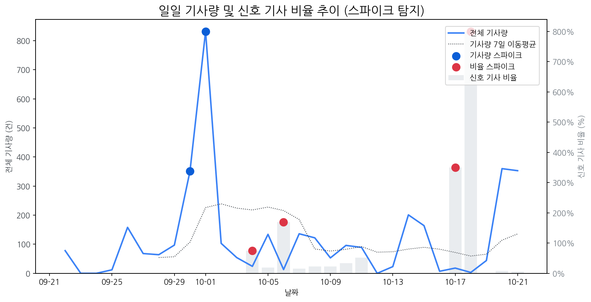

| 날짜 | 기사량 | Z-Score |
|---|---|---|
| 2025-09-30 | 351건 | 2.04 |
| 2025-10-01 | 832건 | 2.1 |
| 날짜 | 비율 | Z-Score |
|---|---|---|
| 2025-10-04 | 75.00% | 2.27 |
| 2025-10-06 | 169.23% | 2.05 |
| 2025-10-17 | 350.00% | 2.24 |
| 2025-10-18 | 800.00% | 2.06 |
| 급등 신호 | 오늘 언급량 | 어제 대비 증가 | 모멘텀(z_like) |
|---|---|---|---|
| ar | 5 | 4 | 2 |
| 백플레인 | 4 | 4 | 1.95 |
| 패널 | 5 | 3 | 1.86 |
| 차세대 | 6 | 5 | 1.86 |
| lg디스플레이 | 5 | 5 | 1.74 |
| 모멘텀 토픽 | z_like 점수 | 누적 언급량 |
|---|---|---|
| 삼성 | 2.73 | 415 |
| lg | 2.36 | 294 |
| lg전자 | 2.03 | 81 |
| ar | 2 | 34 |
| 백플레인 | 1.95 | 4 |
| 날짜 | 유형 | 제목 |
|---|---|---|
| 2025-10-15 | LAUNCH | 인하대, 이정환 교수 연구실 소속 학생들 국제학술대회서 성과 인정 |
| 2025-10-22 | INVEST,LAUNCH | [IPO레이더]장석준 이노테크 대표 "복합 신뢰성 장비로 글로벌 시장 도... |
| 2025-10-22 | INVEST,LAUNCH | 삼성·LGD, 다음 격전지는 '차량용 디스플레이'… OLED 기술로 맞붙는다 |
| 2025-10-22 | REGUL | 수원지법 "톱텍, 삼성D에 116억원 지급하라" 판결...삼성D 부분 승소 |
| 2025-10-22 | ORDER | S&P, 3년 만에 LG전자 신용등급 전망 상향 |